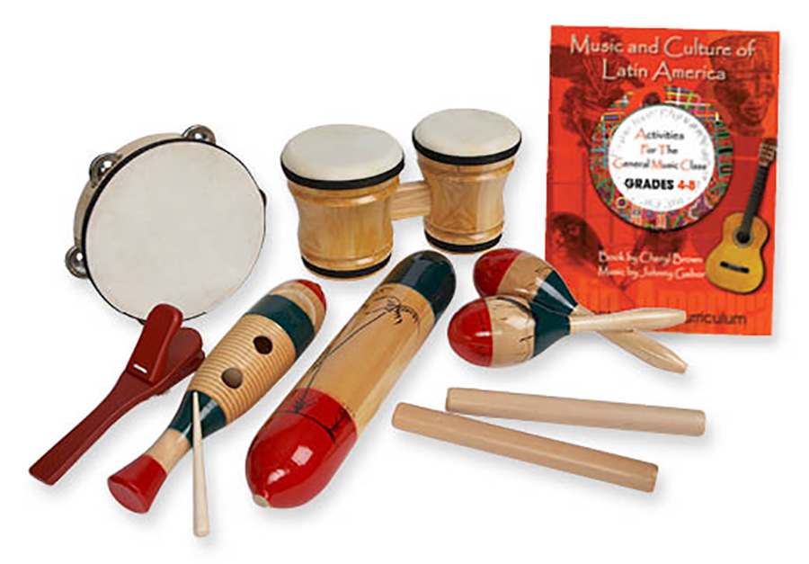
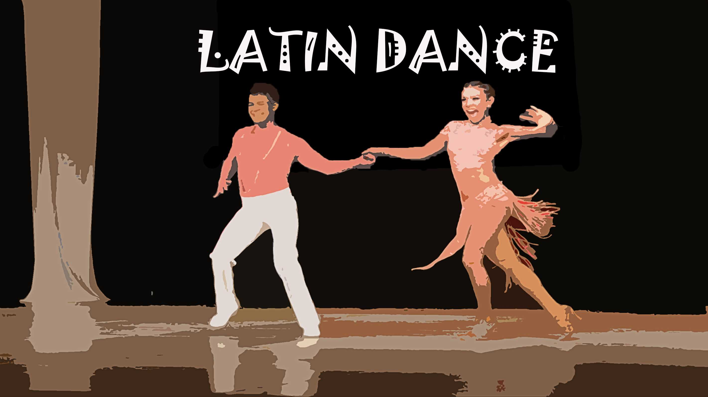
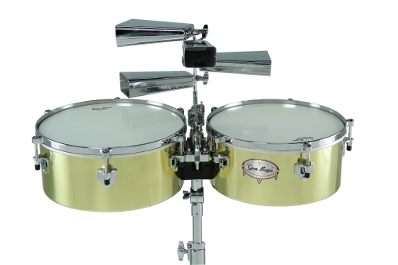

  
Latin music is characterized by use of instruments like congas, bongos, and maracas for percussion, as well as incorporation of trumpets and trombones. Latin music is produced by various types of bands, and there are thousands of artists and groups that have mastered this genre.
To view more about the history of Latin music, see the History of Latin music page.
For our sample audio, check Samples.